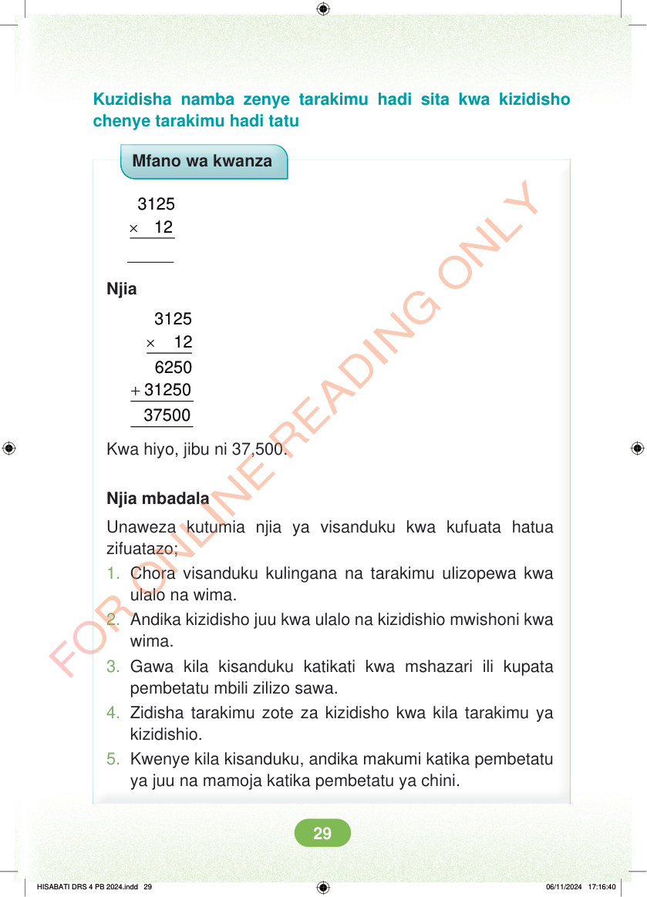

Kuzidisha namba zenye tarakimu hadi sita kwa kizidisho chenye tarakimu hadi tatu Mfano wa kwanza × 3125 12 Njia × 3125 12 + 6250 31250 Kwa hiyo, jibu ni 37,500. Njia mbadala Unaweza kutumia njia ya visanduku kwa kufuata hatua zifuatazo; 1. Chora visanduku kulingana na tarakimu ulizopewa kwa ulalo na wima. 2. Andika kizidisho juu kwa ulalo na kizidishio mwishoni kwa wima. 3. Gawa kila kisanduku katikati kwa mshazari ili kupata pembetatu mbili zilizo sawa. 4. Zidisha tarakimu zote za kizidisho kwa kila tarakimu ya kizidishio. 5. Kwenye kila kisanduku, andika makumi katika pembetatu ya juu na mamoja katika pembetatu ya chini. HISABATI DRS 4 PB 2024.indd 29 HISABATI DRS 4 PB 2024.indd 29 06/11/2024 17:16:40 06/11/2024 17:16:40